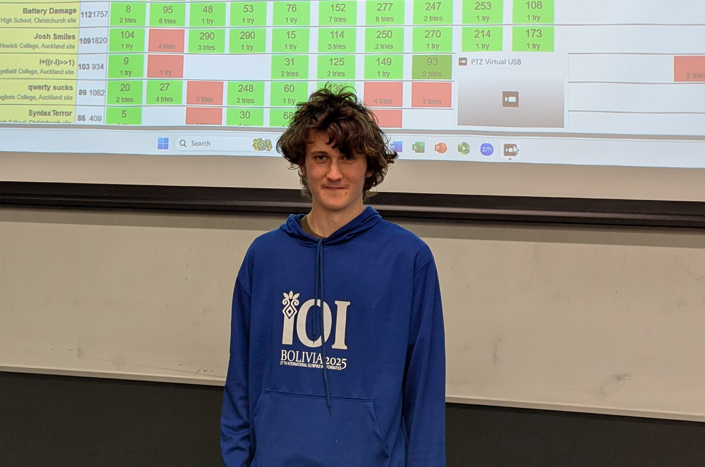
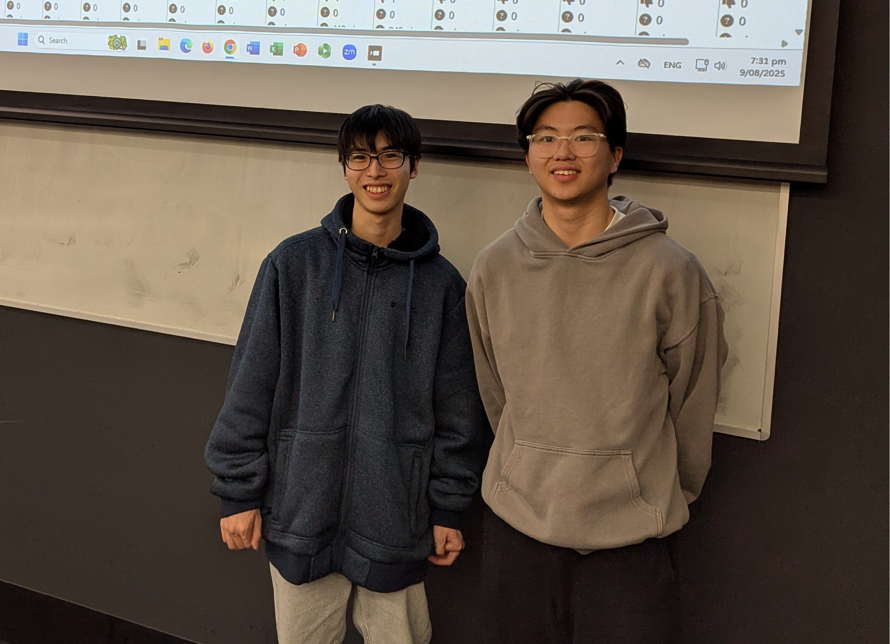
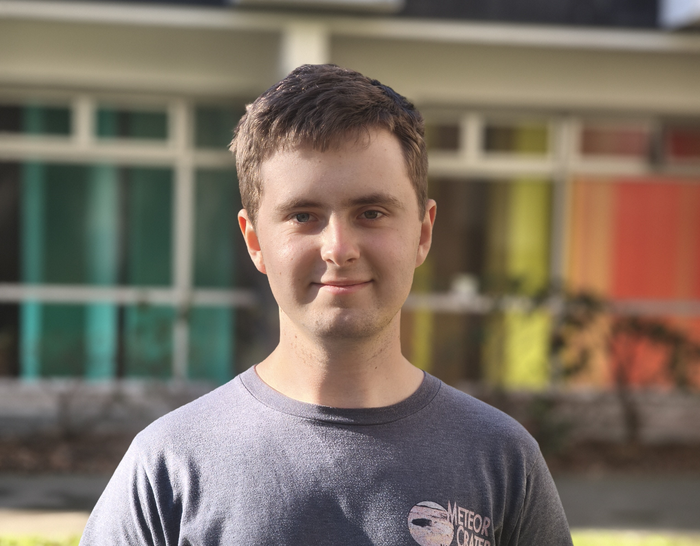
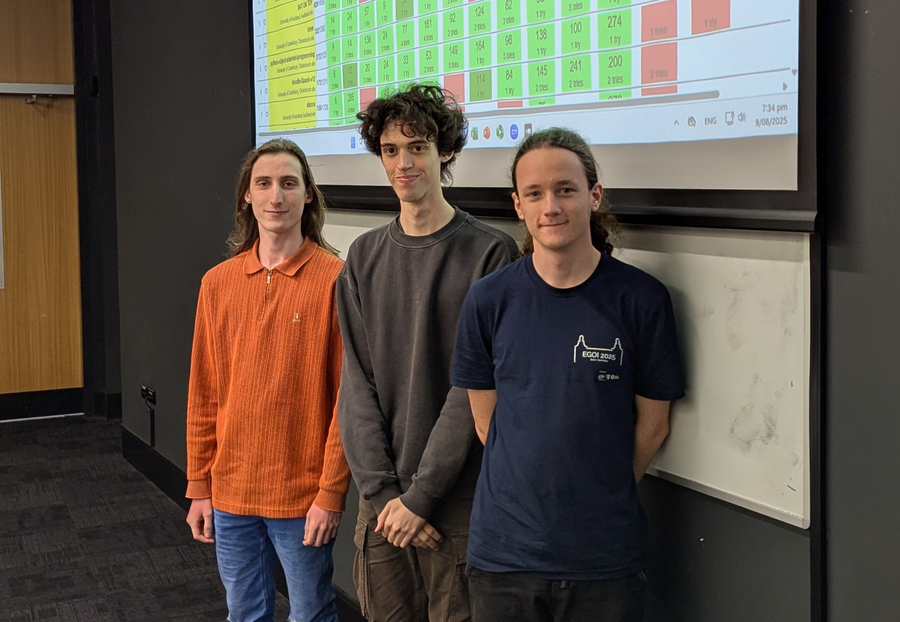
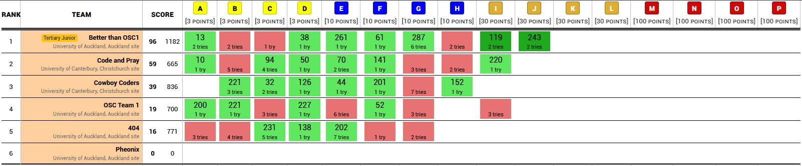

Held on Saturday 9th August.
HappyCapybara
Mt Albert Grammar School
472 points
Victor Coen



Better than OSC1
University of Auckland
96 points
Kim Sear Ngor, Joshua Lo


rm -rfv /
University of Canterbury
119 points
Charlie Trumm


Just Regular Sauerkraut
University of Auckland
572 points
Zalán Varga, Iván Gáspárdy, Anatol Coen
Solved every problem.


Griffin 24
372 points
Siva Manoharan, Yizhou Dai
Congratulations to Siva and Yizhou who have won the Open category 5 times in a row.
